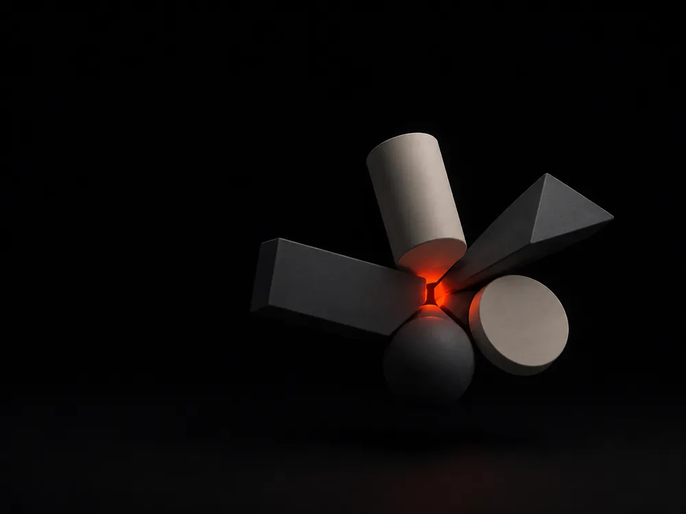
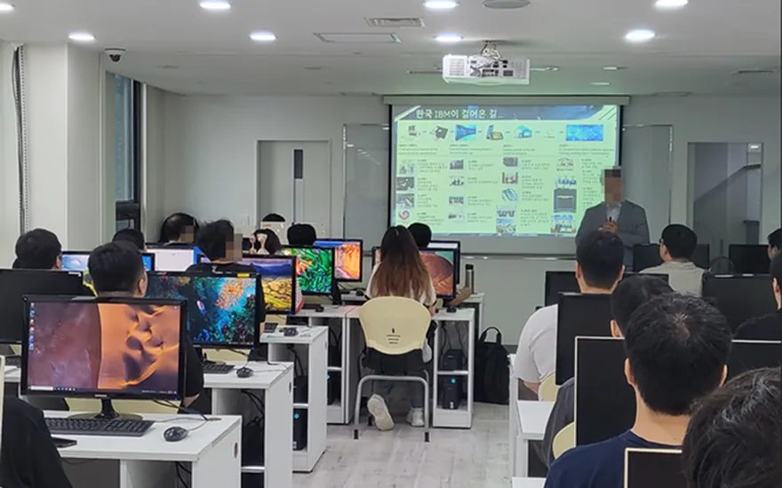
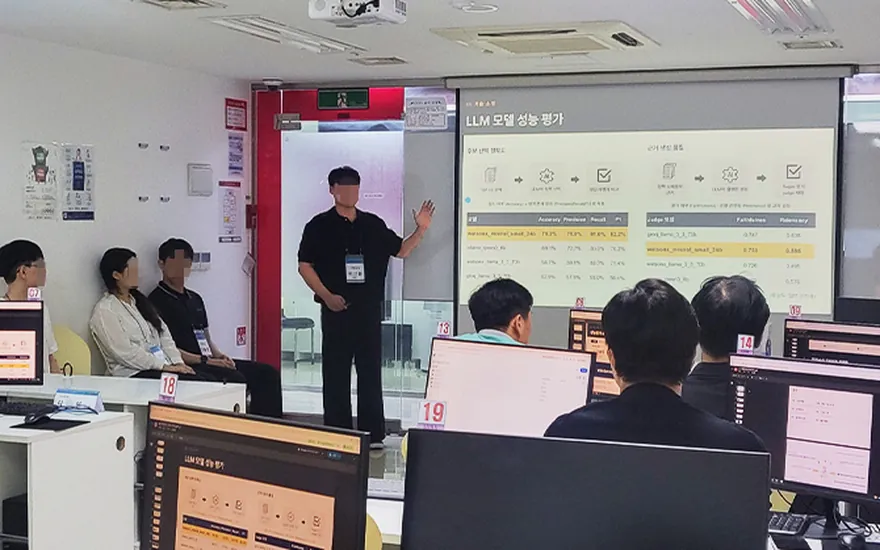
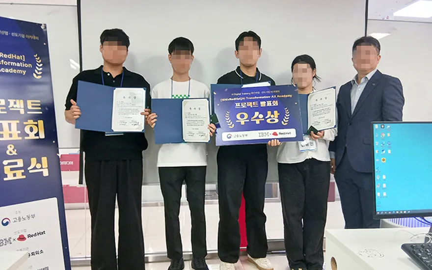
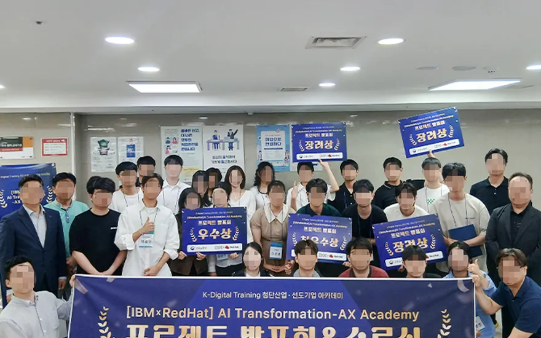

K-DIGITAL TRAINING · IBM CLOUD NATIVE DEV BASE AI AGENT 6기
목표에 따라 봐야 할 것이 다릅니다. 해당하는 쪽을 골라주세요.
AI 에이전트 개발자 채용이 늘고 있습니다
기업이 필요한 건 AI를 활용해 스스로 문제를 정의하고 해결책을 만들어내는 인재입니다. 이 과정은 IBM 현직자 조별 멘토링으로 바로 그 역량을 기르는 데 맞춰져 있습니다.
이력서
수료증은 남지 않습니다
부트캠프를 들었다는 줄만 적힌 이력서는 이미 흔합니다. 무엇을 만들었고 어디까지 배포했는지가 없으면 다음 장으로 넘어갑니다.
면접
"직접 만들어봤나요"
개념을 묻는 시간은 짧습니다. 실제로 굴려본 적이 있는지, 막혔을 때 어떻게 풀었는지에서 갈립니다.
그래서 이 과정은
352시간이 팀 프로젝트입니다
1,040시간 중 352시간을 오프라인에서 팀으로 씁니다. 기획부터 배포까지 겪은 흔적이 그대로 남습니다.
1,040시간을 쌓는 순서
앞의 여섯 단계에서 배운 것이 마지막 352시간 안에서 전부 다시 쓰입니다.
JavaScript와 React로 사용자가 보게 될 화면을 만듭니다.
가장 긴 단계입니다. Java와 Spring Boot로 서비스의 속을 만듭니다.
Docker와 Kubernetes로 만든 것을 실제로 돌아가게 만듭니다.
Python과 FastAPI로 에이전트의 두뇌를 만듭니다.
IBM Cloud와 Red Hat OpenShift, watsonx를 직접 다룹니다.
첫 팀 프로젝트. 오프라인에서 160시간을 팀으로 씁니다.
주제를 직접 정해 기획부터 배포까지. 이게 발표회에 올라갑니다.
개발 직무가 아니어도 달라집니다
내 업무에 AI 활용 기술을 더하면 자동화로 생산성이 오르고, 채용과 이직에서도 그 역량이 핵심 경쟁력이 됩니다.
지금 채용 시장
AI를 쓸 줄 아는지를 봅니다
같은 직무, 같은 연차라도 AI로 성과를 낼 수 있는지가 갈립니다. 직무 공고에 AI 활용 경험이 우대사항으로 붙는 일이 흔해졌습니다.
업무 자동화
반복 업무는 AI가, 사람은 판단에
문서 검토, 데이터 정리, 응대 초안처럼 시간을 잡아먹던 일을 에이전트에 넘깁니다. 마케팅·재무·인사 어느 부서든 대상이 됩니다.
면접에서
써봤다가 아니라 만들어봤다
AI를 써봤다는 사람은 많습니다. 자기 직무 문제를 골라 에이전트로 풀어서 배포까지 해본 사람은 아직 드뭅니다.
무엇을 만들게 되나
전공을 바꾸는 게 아니라 전공 위에 얹습니다. 고르는 문제가 곧 자기 분야입니다.
데이터 취합부터 요약 보고서 초안 작성까지 넘깁니다.
트렌드 탐색부터 소재 제작, 성과 반영까지 이어 붙입니다.
반복되는 문서 처리와 승인 절차를 자동으로 돌립니다.
문의 분류부터 응대 초안 작성까지 처리합니다.
요구사항을 받아 시안을 만들고 수정까지 돕습니다.

비전공자가 걱정하는 것
STEP 01은
JavaScript 기초부터
STEP 02는 Java 문법, STEP 04는 Python 기본 문법에서 출발합니다. 단계별로 올라가는 구조라 처음이어도 따라갈 수 있습니다.
352시간이
오프라인 팀 작업입니다
옆자리에 같은 걸 만드는 사람이 있고, IBM 현직자가 조별로 붙어 만들고 있는 것을 검토합니다.
IBM·Red Hat 선도기업 아카데미 앞 기수가 발표회에 올린 결과물입니다. 팀을 이룬 사람들의 전공을 그대로 적어 두었습니다.
작곡과도, 고고학과도, 호텔관광경영과도 있었습니다.
전공을 보고 뽑는 과정이 아닙니다.
오리엔테이션부터 발표회까지, 앞 기수가 지나온 자리입니다.




결과물과 사진은 [IBM × RedHat] 선도기업 아카데미 4–7기 자료입니다.
이름만 걸어 두고 채용에는 관여하지 않는 과정이 많습니다. 여기는 IBM 협력 기업 채용 담당자가 발표회에 직접 참석해 결과물을 보고 채용을 검토합니다. 이력서 한 장으로 먼저 걸러지는 대신, 만든 것을 직접 설명하는 자리가 생깁니다.
"강의를 들었습니다"
개념은 알지만 끝까지 완성해본 적이 없습니다. 구체적으로 물으면 대답이 막히고, 자기소개서 한 줄로는 무엇을 할 수 있는 사람인지 전달되지 않습니다.
"제가 배포한 서비스입니다"
기획부터 배포까지 직접 겪었기 때문에 어떤 질문이 와도 자기 경험으로 답합니다. 결과물이 먼저 말을 겁니다.
어떻게 배우나요
막히면 그 자리에서
바로 묻습니다
녹화 강의가 아니라 실시간 수업입니다. 장소에 매이지 않고 강사와 현직 엔지니어에게 바로 질문하며 기초를 쌓습니다. 원하면 오프라인 집체로도 참여할 수 있습니다.
회의도 코드 리뷰도
직접 겪습니다
팀으로 기획하고 설계하고 배포합니다. 현업과 같은 방식으로 부딪히기 때문에, 수료할 때 결과물과 함께 협업 이력이 남습니다.
전공을 보고 뽑힌 사람은 없었습니다. 발표회에서 만든 것을 보여준 사람들입니다.
수료생 전원이 취업으로 이어졌습니다.
한 번으로 끝난 숫자가 아니라는 뜻입니다.
작곡과, 고고학과, 호텔관광경영과 출신이 같은 자리에서 만들고 나갔습니다.
취업률은 해당 기수 수료생 기준입니다.
IBM과 직접 이어지는 지점
공식 모집 페이지에 명시된 항목만 그대로 옮겼습니다.
교육 혜택 항목에 명시되어 있습니다. 연계 방식은 상담에서 확인하시는 편이 정확합니다.
강의를 듣는 자리가 아니라, 만들고 있는 것을 검토받는 자리입니다.
Cloud Native 컨설팅 사례 2시간, AI Agent 컨설팅 사례 2시간. 커리큘럼 안에 시수로 잡혀 있습니다.
참여가 확정되면 수강 기간 동안 빌려드립니다. 장비를 따로 준비하지 않아도 됩니다.
교육 혜택으로 안내되어 있습니다. 금액과 조건은 상담에서 안내드립니다.
지원 전에 확인할 것
지원할 수 있습니다. 앞 기수 결과물을 보면 농업, 상권, 제조, 관제, 문서 업무까지 걸쳐 있습니다. 자기가 아는 분야의 문제를 골라 에이전트로 푸는 방식이라, 개발 직군이 목표가 아니어도 쓸 데가 있습니다.
단계별로 올라가는 커리큘럼입니다. STEP 01은 JavaScript 기초, STEP 02는 Java 문법, STEP 04는 Python 기본 문법에서 시작합니다.
가능합니다. 다만 교육 시작일 전에 국민내일배움카드를 발급받아야 하고, 고용보험 상실신고가 완료되어 있어야 합니다.
정규교과 680시간은 실시간 질문이 가능한 비대면 라이브 수업이고, 원하시면 오프라인 집체로도 참여할 수 있습니다. 프로젝트 교과 352시간은 강남캠퍼스에서 팀으로 진행합니다.
괜찮습니다. 훈련 참여가 확정되면 수강 기간 동안 무상으로 대여합니다.
국비지원 과정이라 지원 유형에 따라 달라집니다. 개인 조건에 따라 금액이 나뉘므로 상담에서 확인 후 안내드립니다.
K-Digital Training 수강 이력이 있으면 지원할 수 없습니다. 다만 K-디지털 기초역량훈련은 이력에 포함되지 않습니다. 고용24 → 마이페이지 → 훈련관리에서 확인하실 수 있습니다.
모집 인원과 마감 날짜는 확정되는 대로 안내드립니다. 개강은 2026년 9월 예정입니다. 상담을 남겨 주시면 일정이 정해지는 즉시 먼저 연락드립니다.
지원 자격이 되는지, 내일배움카드는 어떻게 만드는지, 개강은 언제인지. 전화 한 통이면 정리됩니다. 바로 신청하실 필요는 없습니다.
02-3478-0008 로 전화하기하이미디어아카데미 강남캠퍼스 · 평일 09:00 ~ 18:00